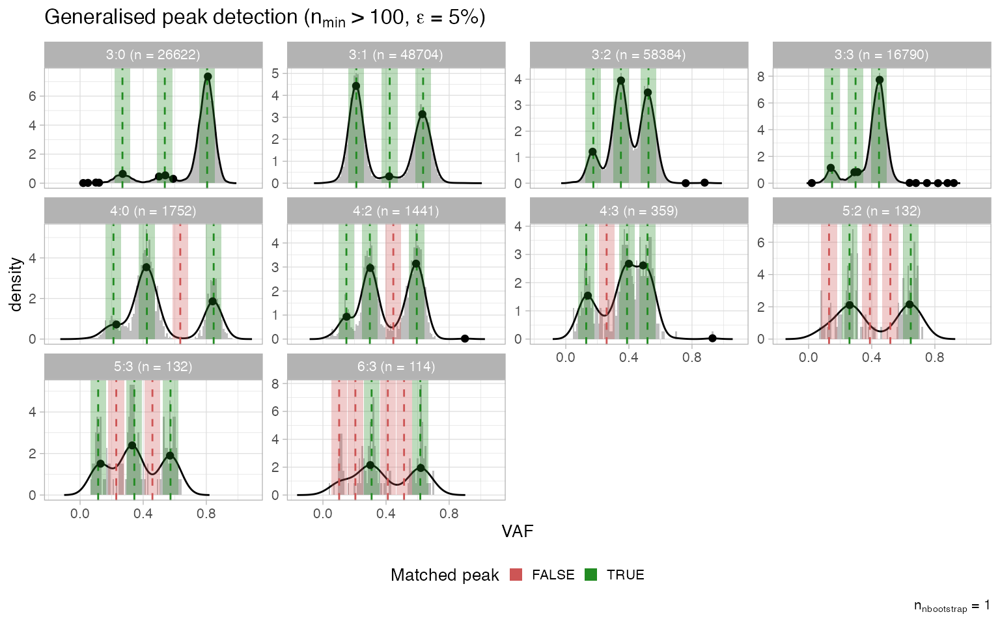
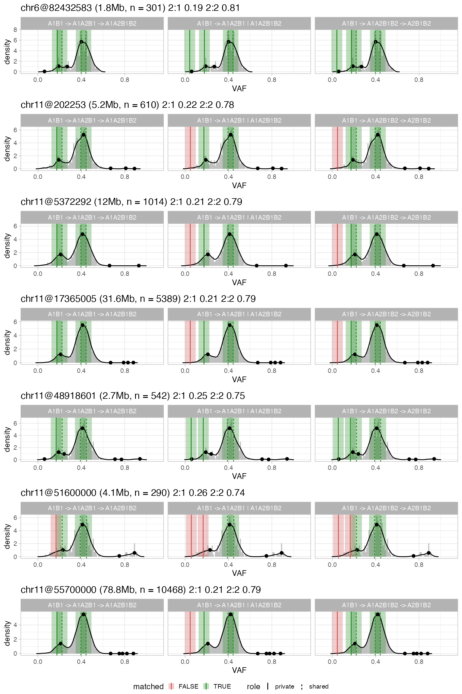

Peak analysis
CNAqc can perform quality control (QC) of somatic mutations, allele-specific CNAs and tumour purity. 3 distinct procedures are available, all called by function analyze_peaks. The idea is as follows: a CNA segment with \(m\)/ \(M\) copies of the minor/ major alleles is consistent with mutation data if VAFs peak at certain positions we can compute. CNAqc computes expected peaks, and compares them to the one it detects from data. The theory works for both clonal and subclonal segemtns with some modifications.
library(CNAqc)
#> Warning: replacing previous import 'cli::num_ansi_colors' by
#> 'crayon::num_ansi_colors' when loading 'BMix'
#> Warning: replacing previous import 'crayon::%+%' by 'ggplot2::%+%' when loading
#> 'BMix'
#> ✓ Loading BMix, 'Binomial and Beta-Binomial univariate mixtures'. Support : <https://caravagnalab.github.io/BMix/>
#> Warning: package 'tidyr' was built under R version 4.0.5
#> Warning: package 'readr' was built under R version 4.0.5
#> Warning: package 'dplyr' was built under R version 4.0.5
#> Warning: package 'crayon' was built under R version 4.0.5
#> ✓ Loading CNAqc, 'Copy Number Alteration quality check'. Support : <https://caravagn.github.io/CNAqc/>
# We work with the template dataset.
data('example_dataset_CNAqc', package = 'CNAqc')
x = CNAqc::init(
example_dataset_CNAqc$snvs,
example_dataset_CNAqc$cna,
example_dataset_CNAqc$purity,
ref = 'hg19')
#> [ CNAqc - CNA Quality Check ]
#> ℹ Using reference genome coordinates for: hg19.
#> ℹ Drivers are annotated, but 'gene' column is missing, using mutation location.
#> ✓ Fortified calls for 12963 somatic mutations: 12963 SNVs (100%) and 0 indels.
#> ! CNAs have no CCF, assuming clonal CNAs (CCF = 1).
#> ✓ Fortified CNAs for 267 segments: 267 clonal and 0 subclonal.
#> ✓ 12963 mutations mapped to clonal CNAs.
x = CNAqc::example_PCAWG
print(x)
#> ── [ CNAqc ] 12400 mutations in 552 segments (486 clonal, 66 subclonal). Genome
#>
#> ── Clonal CNAs
#>
#> 3:0 [n = 1772, L = 414 Mb] ■■■■■■■■■■■■■■■■■■■■■■■■■■■ { CDK12 }
#> 2:2 [n = 1713, L = 277 Mb] ■■■■■■■■■■■■■■■■■■■■■■■■■■
#> 2:1 [n = 1479, L = 289 Mb] ■■■■■■■■■■■■■■■■■■■■■■
#> 3:1 [n = 1444, L = 221 Mb] ■■■■■■■■■■■■■■■■■■■■■■
#> 2:0 [n = 949, L = 320 Mb] ■■■■■■■■■■■■■■ { TP53 }
#> 3:2 [n = 491, L = 54 Mb] ■■■■■■■
#> 4:1 [n = 445, L = 49 Mb] ■■■■■■■
#> 1:1 [n = 320, L = 104 Mb] ■■■■■
#> 4:2 [n = 310, L = 34 Mb] ■■■■■
#> 5:0 [n = 110, L = 20 Mb] ■■
#>
#> ── Subclonal CNAs (showing up to 10 segments)
#>
#> chr13@62300908 [n = 231, L = 24.27 Mb] 2:0 (0.08) 2:1 (0.92) ■■■■■■■■■■
#> chr1@176138962 [n = 216, L = 25.93 Mb] 2:1 (0.26) 2:2 (0.74) ■■■■■■■■■
#> chr1@220232950 [n = 137, L = 27.02 Mb] 2:1 (0.35) 2:2 (0.65) ■■■■■
#> chr1@91503321 [n = 133, L = 14.64 Mb] 2:1 (0.25) 2:2 (0.75) ■■■■■
#> chr18@30575049 [n = 129, L = 29.95 Mb] 1:0 (0.32) 1:1 (0.68) ■■■■■
#> chr9@16500688 [n = 116, L = 13.48 Mb] 2:1 (0.87) 2:2 (0.13) ■■■■■
#> chr1@48302609 [n = 111, L = 21.73 Mb] 2:1 (0.26) 2:2 (0.74) ■■■■
#> chr8@159286 [n = 110, L = 27.39 Mb] 1:0 (0.06) 1:1 (0.94) ■■■■
#> chr13@96297358 [n = 110, L = 17.85 Mb] 2:0 (0.09) 2:1 (0.91) ■■■■
#> chr10@7016917 [n = 95, L = 11.51 Mb] 2:1 (0.67) 2:2 (0.33) ■■■■
#> ℹ Sample Purity: 88.5% ~ Ploidy: 3.
#> ℹ There are 2 annotated driver(s) mapped to clonal CNAs.
#> chr from to ref alt DP NV VAF driver_label is_driver
#> chr17 7577058 7577058 C A 26 23 0.8846154 TP53 TRUE
#> chr17 37680973 37680973 C T 41 39 0.9512195 CDK12 TRUERun default analysis
x = analyze_peaks(x)
#>
#> ── Peak analysis: simple CNAs ──────────────────────────────────────────────────
#> ℹ Analysing 4461 mutations mapping to karyotype(s) 2:2, 2:1, 2:0, and 1:1.
#> ℹ Mixed type peak detection for karyotype 1:1 (320 mutations)
#> ℹ Mixed type peak detection for karyotype 2:0 (949 mutations)
#> ℹ Mixed type peak detection for karyotype 2:1 (1479 mutations)
#> ℹ Mixed type peak detection for karyotype 2:2 (1713 mutations)
#> # A tibble: 7 × 16
#> # Rowwise:
#> mutation_multiplicity karyotype peak delta_vaf x y counts_per_bin
#> <dbl> <chr> <dbl> <dbl> <dbl> <dbl> <int>
#> 1 1 2:2 0.235 0.00704 0.221 1.64 4
#> 2 2 2:2 0.469 0.0141 0.448 2.28 7
#> 3 1 2:1 0.307 0.0120 0.35 1.93 18
#> 4 2 2:1 0.614 0.0240 0.460 1.77 19
#> 5 1 2:0 0.442 0.025 0.47 0.55 11
#> 6 2 2:0 0.885 0.05 0.472 0.550 11
#> 7 1 1:1 0.442 0.025 0.316 2.76 50
#> # … with 9 more variables: discarded <lgl>, from <chr>, offset_VAF <dbl>,
#> # offset <dbl>, weight <dbl>, epsilon <dbl>, VAF_tolerance <dbl>,
#> # matched <lgl>, QC <chr>
#> ✓ Peak detection PASS with r = 0.173135550354146 - maximum purity error ε = 0.05.
#>
#> ── Peak analysis: complex CNAs ─────────────────────────────────────────────────
#> ℹ Karyotypes 3:0, 3:1, 3:2, 4:1, 4:2, 5:0, and 7:4 with >100 mutation(s). Using epsilon = 0.05.
#> # A tibble: 7 × 5
#> # Groups: karyotype, matched [7]
#> karyotype n mismatched matched prop
#> <chr> <table> <dbl> <int> <dbl>
#> 1 3:2 491 0 3 1
#> 2 4:1 445 1 3 0.75
#> 3 3:0 1772 1 2 0.667
#> 4 3:1 1444 1 2 0.667
#> 5 5:0 110 2 3 0.6
#> 6 4:2 310 2 2 0.5
#> 7 7:4 101 4 3 0.429
#>
#> ── Peak analysis: subclonal CNAs ───────────────────────────────────────────────
#> → Computing evolution models for subclonal CNAs - starting from 1:1
#> # A tibble: 15 × 6
#> segment_id model_id model prop size clones
#> <chr> <chr> <chr> <dbl> <chr> <chr>
#> 1 chr1@48302609 A1B1 -> A1A2B1 -> A1A2B1B2 linear 0.5 (21.7Mb, n … 2:1 0…
#> 2 chr1@48302609 A1B1 -> A1A2B1 | A1A2B1B2 branching 0.5 (21.7Mb, n … 2:1 0…
#> 3 chr1@91503321 A1B1 -> A1A2B1 -> A1A2B1B2 linear 0.25 (14.6Mb, n … 2:1 0…
#> 4 chr1@91503321 A1B1 -> A1A2B1 | A1A2B1B2 branching 0.25 (14.6Mb, n … 2:1 0…
#> 5 chr1@176138962 A1B1 -> A1A2B1 -> A1A2B1B2 linear 0.5 (25.9Mb, n … 2:1 0…
#> 6 chr1@176138962 A1B1 -> A1A2B1 | A1A2B1B2 branching 0.5 (25.9Mb, n … 2:1 0…
#> 7 chr1@220232950 A1B1 -> A1A2B1 | A1A2B1B2 branching 0.75 (27Mb, n = … 2:1 0…
#> 8 chr8@159286 A1B1 -> A1B1 -> B1 linear 0.333 (27.4Mb, n … 1:0 0…
#> 9 chr8@159286 A1B1 -> B1 | A1B1 branching 0.333 (27.4Mb, n … 1:0 0…
#> 10 chr9@16500688 A1B1 -> A1A2B1 -> A1A2B1B2 linear 0.25 (13.5Mb, n … 2:1 0…
#> 11 chr9@16500688 A1B1 -> A1A2B1 | A1A2B1B2 branching 0.25 (13.5Mb, n … 2:1 0…
#> 12 chr13@62300908 A1B1 -> A1A2B1 -> A1A2 linear 0.75 (24.3Mb, n … 2:0 0…
#> 13 chr13@96297358 A1B1 -> B1B2 | A1B1B2 branching 0.333 (17.8Mb, n … 2:0 0…
#> 14 chr18@30575049 A1B1 -> A1B1 -> B1 linear 0.333 (30Mb, n = … 1:0 0…
#> 15 chr18@30575049 A1B1 -> B1 | A1B1 branching 0.333 (30Mb, n = … 1:0 0…An S3 methods print to screen all QC results based on peak-detection.
print(x)
#> ── [ CNAqc ] 12400 mutations in 552 segments (486 clonal, 66 subclonal). Genome
#>
#> ── Clonal CNAs
#>
#> 3:0 [n = 1772, L = 414 Mb] ■■■■■■■■■■■■■■■■■■■■■■■■■■■ { CDK12 }
#> 2:2 [n = 1713, L = 277 Mb] ■■■■■■■■■■■■■■■■■■■■■■■■■■
#> 2:1 [n = 1479, L = 289 Mb] ■■■■■■■■■■■■■■■■■■■■■■
#> 3:1 [n = 1444, L = 221 Mb] ■■■■■■■■■■■■■■■■■■■■■■
#> 2:0 [n = 949, L = 320 Mb] ■■■■■■■■■■■■■■ { TP53 }
#> 3:2 [n = 491, L = 54 Mb] ■■■■■■■
#> 4:1 [n = 445, L = 49 Mb] ■■■■■■■
#> 1:1 [n = 320, L = 104 Mb] ■■■■■
#> 4:2 [n = 310, L = 34 Mb] ■■■■■
#> 5:0 [n = 110, L = 20 Mb] ■■
#>
#> ── Subclonal CNAs (showing up to 10 segments)
#>
#> chr13@62300908 [n = 231, L = 24.27 Mb] 2:0 (0.08) 2:1 (0.92) ■■■■■■■■■■
#> chr1@176138962 [n = 216, L = 25.93 Mb] 2:1 (0.26) 2:2 (0.74) ■■■■■■■■■
#> chr1@220232950 [n = 137, L = 27.02 Mb] 2:1 (0.35) 2:2 (0.65) ■■■■■
#> chr1@91503321 [n = 133, L = 14.64 Mb] 2:1 (0.25) 2:2 (0.75) ■■■■■
#> chr18@30575049 [n = 129, L = 29.95 Mb] 1:0 (0.32) 1:1 (0.68) ■■■■■
#> chr9@16500688 [n = 116, L = 13.48 Mb] 2:1 (0.87) 2:2 (0.13) ■■■■■
#> chr1@48302609 [n = 111, L = 21.73 Mb] 2:1 (0.26) 2:2 (0.74) ■■■■
#> chr8@159286 [n = 110, L = 27.39 Mb] 1:0 (0.06) 1:1 (0.94) ■■■■
#> chr13@96297358 [n = 110, L = 17.85 Mb] 2:0 (0.09) 2:1 (0.91) ■■■■
#> chr10@7016917 [n = 95, L = 11.51 Mb] 2:1 (0.67) 2:2 (0.33) ■■■■
#> ℹ Sample Purity: 88.5% ~ Ploidy: 3.
#> ℹ There are 2 annotated driver(s) mapped to clonal CNAs.
#> chr from to ref alt DP NV VAF driver_label is_driver
#> chr17 7577058 7577058 C A 26 23 0.8846154 TP53 TRUE
#> chr17 37680973 37680973 C T 41 39 0.9512195 CDK12 TRUE
#>
#> ── PASS Peaks QC closest: 119%, λ = 0.1731. Purity correction: 17%. ──────────
#> ℹ 2:2 ~ n = 1713 ( 38%) → PASS 0.088 PASS 0.071
#> ℹ 2:1 ~ n = 1479 ( 33%) → FAIL -0.205 FAIL 0.259
#> ℹ 2:0 ~ n = 949 ( 21%) → PASS -0.055 PASS 0.413
#> ℹ 1:1 ~ n = 320 ( 7%) → FAIL 0.253
#>
#> ── General peak QC (4673 mutations): PASS 18 FAIL 11 - epsilon = 0.05. ─────
#> ℹ 3:2 ~ n = 491 ( 11%) → PASS 3 FAIL 0
#> ℹ 4:1 ~ n = 445 ( 10%) → PASS 3 FAIL 1
#> ℹ 3:0 ~ n = 1772 ( 38%) → PASS 2 FAIL 1
#> ℹ 3:1 ~ n = 1444 ( 31%) → PASS 2 FAIL 1
#> ℹ 5:0 ~ n = 110 ( 2%) → PASS 3 FAIL 2
#> ℹ 4:2 ~ n = 310 ( 7%) → PASS 2 FAIL 2
#> ℹ 7:4 ~ n = 101 ( 2%) → PASS 3 FAIL 4
#>
#> ── Subclonal peaks QC (9 segments, initial state 3:0): linear 1 branching 2 eith
#>
#> ── PASS Linear models
#> ℹ chr13@62300908 ~ (24.3Mb, n = 231) 2:0 (8) + 2:1 (92) : A1B1 -> A1A2B1 -> A1A2 [75]
#>
#> ── PASS Branching models
#> ℹ chr1@220232950 ~ (27Mb, n = 137) 2:1 (35) + 2:2 (65) : A1B1 -> A1A2B1 | A1A2B1B2 [75]
#> ℹ chr13@96297358 ~ (17.8Mb, n = 110) 2:0 (9) + 2:1 (91) : A1B1 -> B1B2 | A1B1B2 [33.3333333333333]
#>
#> ── UNKNOWN Either branching or linear models
#> ℹ chr1@176138962 ~ (25.9Mb, n = 216) 2:1 (26) + 2:2 (74) : A1B1 -> A1A2B1 -> A1A2B1B2 [50]; A1B1 -> A1A2B1 | A1A2B1B2 [50]
#> ℹ chr1@48302609 ~ (21.7Mb, n = 111) 2:1 (26) + 2:2 (74) : A1B1 -> A1A2B1 -> A1A2B1B2 [50]; A1B1 -> A1A2B1 | A1A2B1B2 [50]
#> ℹ chr1@91503321 ~ (14.6Mb, n = 133) 2:1 (25) + 2:2 (75) : A1B1 -> A1A2B1 -> A1A2B1B2 [25]; A1B1 -> A1A2B1 | A1A2B1B2 [25]
#> ℹ chr18@30575049 ~ (30Mb, n = 129) 1:0 (32) + 1:1 (68) : A1B1 -> A1B1 -> B1 [33.3333333333333]; A1B1 -> B1 | A1B1 [33.3333333333333]
#> ℹ chr8@159286 ~ (27.4Mb, n = 110) 1:0 (6) + 1:1 (94) : A1B1 -> A1B1 -> B1 [33.3333333333333]; A1B1 -> B1 | A1B1 [33.3333333333333]
#> ℹ chr9@16500688 ~ (13.5Mb, n = 116) 2:1 (87) + 2:2 (13) : A1B1 -> A1A2B1 -> A1A2B1B2 [25]; A1B1 -> A1A2B1 | A1A2B1B2 [25]Simple clonal CNAs
This QC is the most important as it can be used to detect adjustments required to better fit purity or ploidy of the sample (to re-run the copy number caller), or to select among alternative copy number solutions returned from a caller (tetraploid versus triploid).
For these segments the package computes a linear score from the distance between data peaks, and their theoretical expectation. The peaks are determined via:
a kernel-density (unitary adjustment, Gaussian kernel) used to smooth the data distribution, and the peakPick package to determine peaks in the smoothed density.
-
a Binomial mixture model using Bmix.
Peaks below a mnimum density (noise and miscalled segments) are filtered, and the others are matched to a predefined location with some tolerance (e.g., plus/minus
0.5 * epsilon, whereepsilon = 0.015is the default).
Theis analysis produces a set of scores that account for karyotype size and peaks offset, and that can be combined into a linear model to compute an overall QC metrics, called rho.
A summary table is stored inside the named list peaks_analysis.
Plotting results
For every karyotype, a plot with the estimated KDE and the matched peaks is available (assembled ggpubr figure with); gray panels represent karyotypes that have not been used.

Individual karyotypes plots are available inside the named lists peaks_analysis$plots, named afte each required karyotype.
# Tetraploid segments
x$peaks_analysis$plots$`2:2`
#> NULLYou can integrate plots from QC analysis with data.
cowplot::plot_grid(
plot_peaks_analysis(x),
plot_segments(x),
rel_heights = c(.8, 1),
nrow = 2
)
Summary results and Quality Check (QC)
The summary technical table is available as peaks_analysis$matches inside x.
x$peaks_analysis$matches
#> # A tibble: 7 × 16
#> # Rowwise:
#> mutation_multiplicity karyotype peak delta_vaf x y counts_per_bin
#> <dbl> <chr> <dbl> <dbl> <dbl> <dbl> <int>
#> 1 1 2:2 0.235 0.00704 0.221 1.64 4
#> 2 2 2:2 0.469 0.0141 0.448 2.28 7
#> 3 1 2:1 0.307 0.0120 0.35 1.93 18
#> 4 2 2:1 0.614 0.0240 0.460 1.77 19
#> 5 1 2:0 0.442 0.025 0.47 0.55 11
#> 6 2 2:0 0.885 0.05 0.472 0.550 11
#> 7 1 1:1 0.442 0.025 0.316 2.76 50
#> # … with 9 more variables: discarded <lgl>, from <chr>, offset_VAF <dbl>,
#> # offset <dbl>, weight <dbl>, epsilon <dbl>, VAF_tolerance <dbl>,
#> # matched <lgl>, QC <chr>The table reports several information. The following might be of some use after the analysis:
-
mutation_multiplicityandkaryotype, which are the number of copies of the mutation, and the segment’s karyotype. Each segment withdiscarded = FALSEhas been analysed; -
peak,x,yreport where the expected peak should be found, and where it has been found (xandy); -
offset,weightandscorethat report the factors of the finalscore; -
QCthat reports if the peak is considered matched.
The overall QC result - "PASS"/"FAIL" - is available in x.
x$peaks_analysis$QC
#> [1] "PASS"You can visually summarise the result of the QC analysis, for both peaks and CCF computation.
plot_qc(x)
Here since CCF have not been computed, the only available QC tests are for peak-detection.